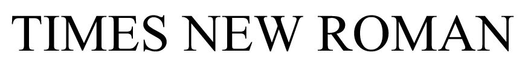
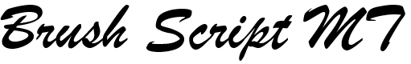

Font Rasterization
CS 184 Final Project by Kyle Wallace, Raiya Choudhuri, Scott Durand, Alex Buckley
Abstract
In this project, we worked on rasterizing fonts from TrueTypeFont(.ttf) files. These files specify a font by specifying spacing between glyphs, providing the control points of lines and Bezier curves that make up each glyph, and more. To accomplish font rasterization, we first added support for the CS 184 Rasterizer project to parse .ttf files and draw Bezier curves. We then implemented an algorithm to rasterize flood-filled glyphs, and modified it to work with supersampling. Finally, we added the ability to map textures onto the glyphs and optimized our code.
Technical Approach
Processing TrueType Files and Displaying Results
In order to parse and extract data from TrueType files, we used the FreeType library. After initializing the library and setting the font using the input path to a .ttf file, we iterate through each character in the input text and call FT_Load_Char on the character and with the FT_LOAD_NO_SCALE flag set. Once the current glyph is loaded into the glyph slot in outline format, we extract the glyph's outline, which contains a list of points, a list of corresponding tags, and a list of shorts that gives the end points of each contour within the outline. After using FreeType to obtain this data, we then manually process the data to manually assemble individual Bézier curves and to scale and position glyphs.
Assembling Bézier curves.
For each contour in the glyph outline, we iterate through the contour's points and use the corresponding tags as well as FreeType's conventions to assemble the lines, quadratic Bézier curves, and cubic Bézier curves that make up the glyph outline. There are three types of tags: FT_CURVE_TAG_ON, which specifies an end point of a line or curve, FT_CURVE_TAG_CONIC, which specifies a control point of a quadratic Bézier curve, and FT_CURVE_TAG_CUBIC, which specifies a control point of a cubic Bézier curve.
Our original algorithm for decomposing a contour's points into lines and curves was to iterate through the points in the contour, starting a new line/curve when an end point is seen, adding any control points seen before the next end point, and using the next end point to finish the current line/curve as well as begin the next. While the general approach of this algorithm was fine, we were getting incorrect results because we were not following FreeType's conventions for outline curve decomposition. Once we found the documentation that specifies these conventions, we fixed our algorithm by applying the following rules:
- The last point in a contour uses the first as an end point to create a closed contour.
- Two successive conic 'off' points implicitly define an 'on' point at their exact middle.
- If the first point in a contour is a conic 'off' point, use the last point of the contour as the contour's start point. If the last point is also a conic 'off' point, start the contour with an implicitly defined 'on' point at their exact middle.
With our outline curve decomposition working correctly, we are now able to obtain a list of individual lines and curves that make up the outline of any glyph in the specified font. Before we pass these lines and curves to the rasterizer, we still need to modify the points that make up the lines and curves in order to scale glyphs to the provided font size and to position the glyphs with accurate spacing.
Scaling and positioning glyphs.
In order to format each glyph with correct scaling and positioning, we compute the desired dimensions and location of each glyph's bounding box, and we scale all of the points of each glyph to fill its bounding box. Throughout this process, there are several metrics of each glyph that need to be taken into account.

To position glyphs correctly, our formatting code maintains a vector representing the position of the next glyph to be drawn. We want the top left corner of each glyph's bounding box to be at this position before shifting for spacing, and we want the height and width of the bounding box to be the height and width of the glyph after scaling to the provided font size. First, we set our desired glyph height to the provided font size, and we enforce relative height among all glyphs by scaling our desired height by the ratio of the current glyph's height to the height of the tallest glyph. Next, we set our desired width, advance, bearingX, and bearingY by scaling the original metrics by the same amount we scaled the original height. Lastly, we apply a downward shift to account for making glyphs smaller while enforcing relative glyph height, we apply a downward shift of the difference between the scaled height and the scaled bearingY to account for glyphs that extend past the baseline, and we apply a rightward shift of the scaled bearingX to maintain the font-defined spacing between glyphs. With the size and location of the glyph's bounding box computed, we rescale the ranges of x- and y-coordinates of the outline's points to fill the bounding box. To prepare for the next glyph, we update the position vector by adding the scaled advance, adding the width of a space if the current glyph was the last in a word, and apply a line break if necessary.
Once a glyph outline is decomposed into properly scaled and positioned lines and curves, the outline is ready to be rasterized.
Rasterizing Glyph Outlines via Bezier Curves
One method of text rasterization is through the glyph outlines created by the lines and curves. In order to rasterize these outlines, after the TrueType file is parsed into a set of BezierCurve objects, each of these objects are passed into RasterizerImp::rasterize_bc. If the curve consists of one or two points, rasterize_point() or rasterize_line() are called. Otherwise, for a range of t values between 0 and 1 (incrementing by .005 gives a smooth enough result for text unless it is very large) the point on the curve corresponding to that t value is calculated iteratively by linearly interpolating each consecutive pair of points until there is only one point left. This value is then rounded down to the nearest integer to get a pixel coordinate and added to the pixel buffer using the fill_pixel method.
One problem encountered was adjusting the Bezier curve calculation to be iterative instead of recursive. In project 2, we implemented the calculation recursively. However, since the calculation is being done multiple times within a larger function (rasterize_bc), a recursive call does not work. An iterative solution was much cleaner. Another problem was determining the appropriate step size for incrementing t. Too large and there are gaps in the outline, but the smaller the step size, the longer it takes to rasterize an outline. .005 is a good balance between the two - it does not result in gaps unless letters are very large, but is not so small that rasterization takes forever.

Example of our outline rasterization on the left, actual character for reference on the right.
Rasterizing Flood-Filled Text
To rasterize flood-filled text, we utilized an algorithm that calculated intersections between each row in the pixel buffer and the Bezier curves for each glyph in the text. Since the .ttf file specifies the control points of the Bezier curve, we use the Bezier curve equation to solve for the t parameter associated with the y-position of the row. The equation can then be used to solve for the x-position of the intersection using the newfound t parameter and the control points.
We do this with the y-value of a row and every Bezier curve in the text to accumulate a set of intersection points, and then sort them from left to right. From there, every other pair of intersections can be filled, since those will represent being "inside" of a glyph. This process is repeated for every row in the buffer to create flood-filled text.
Our approach likely differs from the FreeType library and other libraries' approaches to rasterization, which utilize extra steps to ensure clarity through techniques such as grid alignment. These extra procedures seemed complex and not well-documented, and so we thought it would be better to take a simpler approach.
One of the problems encountered during flood-filling was that one source stated that .ttf files specified only quadratic Bezier curves and lines, which are easy to solve, but upon actually working with them, we discovered that they can include cubic Beziers as well. The formula for solving cubic polynomials is tedious to implement, and instead we looked at adding a library for solving polynomial equations. A good lesson learned was that sometimes your sources can be incomplete or incorrect, and working with real data often involves surprises.
Below are some examples of our font rasterization with flood-filling.

Anti-aliasing via Supersampling
To create anti-aliased rasterizations, we took advantage of the work done in project 1 to add anti-aliasing via supersampling. Some elements, like resolving samples to the frame buffer or resizing the sample buffer, were already complete and didn't need to be changed, which made this approach convenient. The FreeType library provides several methods of anti-aliasing, including a default "high speed, low memory" algorithm, and LCD filtering. Our approach of supersampling is more memory-intensive and likely slower than these approaches, however, it was more straightforward and finding documentation on these alternate techniques was difficult.
The technique used to fill the supersampled sample buffer would need to be altered from the one used to flood-fill text. The slightly modified algorithm would look at each pixel row of the sample buffer, then look at each row of supersamples within that row, calculate intersections at the sub-pixel y-position of the supersample, and fill samples between pairs of supersampled intersections. The overall logic of the algorithm remained the same, however the complexity arose from iterating correctly and making buffer accesses correctly.
Several problems were encountered while implementing supersampling. The first was trying to comprehend the existing code from the project 1 implementation, as the team member's code we were using had laid out supersamples in the sample buffer and iterated through them differently than the team member who was trying to implement supersampling. Some techniques that helped remedy this situation were drawing out pictures of the supersample layout, printing out the indices of buffer accesses, and reviewing the project spec. These techniques also helped in fixing issues where supersampling did not look correct and it was clear that some accesses were being made incorrectly or some number was being rounded incorrectly.
Another issue was figuring out the order in which to iterate through supersamples. There were two main options - for each row, iterate through supersamples within each pixel or iterate through each row of supersamples. The first approach seemed pretty naive and simple to implement, but inefficient, whereas the second seemed more complex but ultimately made more sense. Ultimately, the first was implemented to test out the technique and figure out which areas were important for the second approach, and then iterating through rows of supersamples was implemented, with comparisons made to the pixel-by-pixel approach to see where bugs arose and if there were any logical errors.
Example without supersampling first, example with supersampling second.
Texture Mapping
Implementing texture mapping involved two main problems - reading in PNG files to create the textures, and integrating our Project 1 texture mapping code into our font rasterizer. In order to access PNG files to create textures, the relative path to the PNG must be passed in as an argument on the command line. The lodepng C++ package is used to read that PNG into a vector of pixels. The alpha channel is stripped and a new Texture object is created. This method of reading in PNG files to create textures is adapted from the Project 1 code. This texture is then included as part of each glyph object that is rasterized. The way that the texture is used for mapping is that it is essentially stretched to fit the bounding box of the text, and then sampled using uv coordinates from 0 to 1. When rasterizing a glyph, for each pixel that is supposed to be colored, the color is calculated using the bilinear texture sampling method from Project 1. Bilinear sampling involves sampling the 4 points around the uv coordinate of the pixel, and linearly interpolating them to create a weighted average color for the point.
The trickiest part of implementing this feature was reading in the PNG file to create the texture and then deciding how to store that texture. Because of the way our font rasterizer stores glyphs, it made more sense to store a pointer to the texture with each individual glyph, rather than as a global variable.
Below are some examples of our font rasterization with texture mapping.
Optimizations
Optimization 1: Bounding Boxes
Computing bezier curve intersections can be computationally intensive, especially for cubic bezier curves. Thus, taking inspiration from Bounding Volume Hierarchies, we decided to try and prune the amount of intersection tests required to get accurate results. Because our font rasterization program is run once on a given input, building an entire BVH would introduce high overhead without taking much advantage of the performance improvements a BVH offers. Instead, when reading in a bezier curve for a glyph, we store the bounding box around the bezier curve's control points. Because a bezier curve will never contain any points outside of this bounding box (this is because a bezier curve is a composition of convex LERP functions between control points), we can prune expensive intersection tests by doing simple bounds checks with the bounding boxes beforehand. This optimization proved that simple bounds checks, along with cached values (precomputing these bounds when reading in the bezier curve) can come a long way in improving performance. On average, this optimization tended to improve benchmark performance by about 50%.
Optimization 2: Multithreading
Given that processor designs are becoming more and more parallel over time, we decided to exploit thread-level-parallelism in our code. Because our algorithm works independently on all rows of pixels, introducing such parallelism was not difficult; we simply dispatched ranges of supersampled pixel rows (ex. rows 0-25) to different software threads. Measuring the performance improvements of this approach proved difficult. Since the same total code was being executed, the only benchmark we could use to measure performance was clock-time. On top of this, different machines react differently towards multithreaded code, some even performing worse on just a primitive multithreaded for-loop. The C++ threading library seems to work inconsistently across different machines, perhaps not exploiting hardware multiprocessing on all setups. Thus, the benchmarks we present below are optimistic, showing the performance improvements on the machine that reacted best to the standard C++ multithreading library. Through our multithreading optimizations, we learned that exploiting hardware-level resources / threads can be difficult to measure and standardize across multiple users / machines.
Results
Here are a few comparisons between actual text and the results of our font rasterization.
| Example of font | Our font rasterization |
|---|---|

|
|
|  | |
References
Contributions From Each Team Member
Kyle Wallace - Using FreeType to parse TrueType files, outline curve decomposition, scaling and positioning glyphs, passing decomposed outlines to the rasterizer.
Raiya Choudhuri - Initial attempts to write a flood-fill algorithm, supersampling, milestone website.
Scott Durand - Assist in library imports / use, contribute to basic algorithm, debugging, optimizations.
Alex Buckley - Bezier curve calculation, rasterization of glyph outlines, reading PNG files, texture mapping, videos.